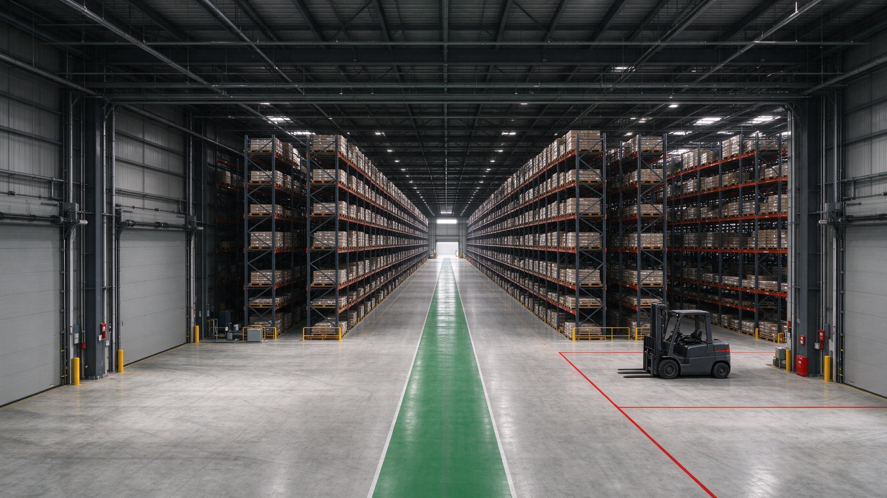
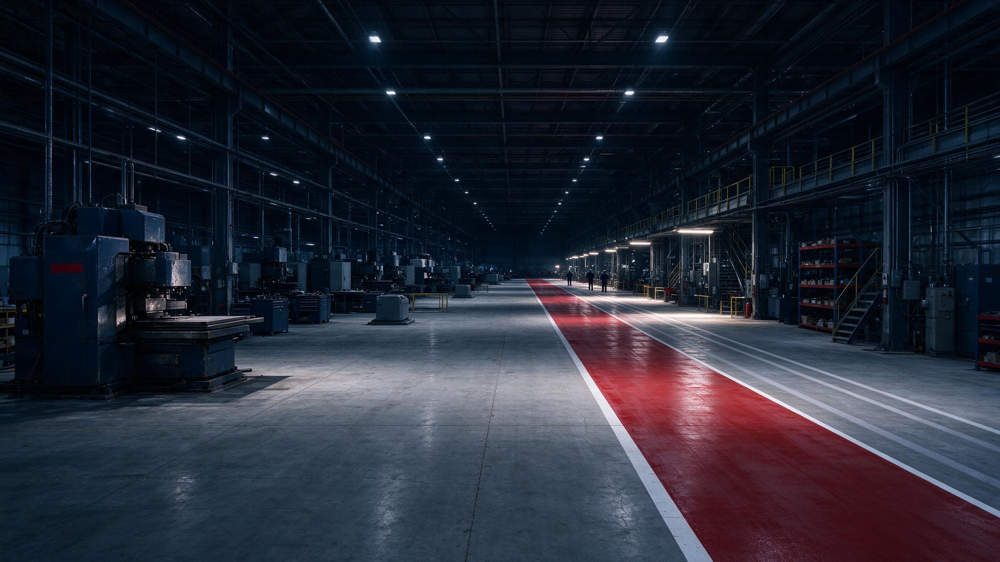
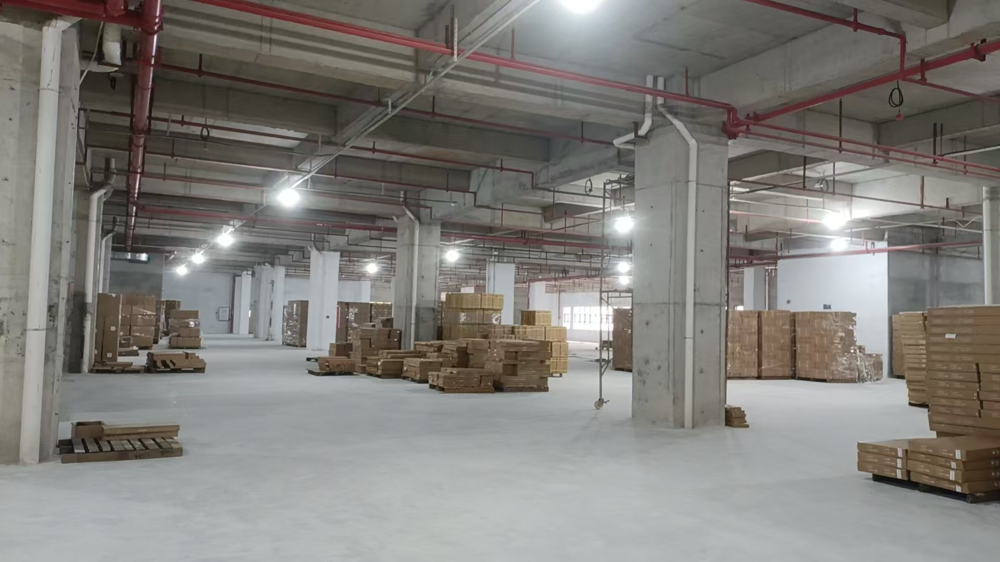
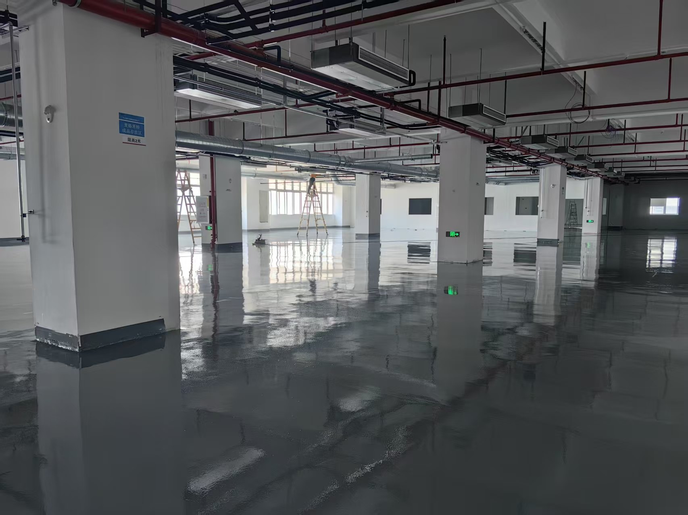

生产更有秩序
用功能分区、通道边界和定置标识，减少找路、找物与交叉干扰。
空间用得明白红涂大师｜工厂视觉与目视化系统服务商
AI 场景示意｜实际方案以现场勘察与合同为准
向下了解01｜现场价值
视觉系统不是装饰。它把空间、规则和责任放到每个人都能看见的位置，服务生产，也服务客户对你的判断。
用功能分区、通道边界和定置标识，减少找路、找物与交叉干扰。
空间用得明白把风险点、禁限行规则与作业要求放到对应位置，让提醒出现在需要它的地方。
规则看得清楚区域、状态、标识与记录相互对应，减少临时补材料、临时摆现场。
检查拿得出依据把现场标准做成可见、可查、可维护的工具，而不是只存在于一次培训里。
标准留得下来02｜系统能力
点击模块，看我们具体做什么，以及它能为你的现场解决什么。

三维总图为空间关系示意，不代替施工图
地坪、墙面、屋面与钢构界面的检查、修复和更新，按生产要求匹配材料与工序。
先解决起砂、破损、渗漏和区域混乱，再让清洁、使用与维护都有稳定基础。
03｜服务选择
三种合作起点，对应不同现场目标。范围可组合，工序、预算与工期在勘察后逐项确认。
适合：客户验厂临近、现场规则不清、需要集中整改
先对照你的验厂要求与现场差距，确定区域、标识、通道、墙面地面的整改优先级。哪些必须先做、哪些可分阶段做，一次讲清。
参考预算3 至 8万元起
参考工期7 至 15天
适合：地坪老化、动线交叉、库区混乱、生产环境需要升级
从人员、物料、叉车与访客怎么走开始，统筹地坪系统、库位分区、通道边界和配套设施。可分区分段施工，减少对生产的影响。
参考预算20 至 50万元
参考工期2 至 6周

适合：客户参访频繁、入口陈旧、企业形象与生产实力不匹配
把门头、外立面、接待区、参观通道与关键看板连成一条有逻辑的参访路径。不是单独做一个门头，而是统一客户看到的第一印象。
参考预算5 至 15万元起
参考工期2 至 4周

预算与工期为既有服务包参考口径，不构成一口价承诺；最终范围、金额与排期以现场勘察及合同清单为准。

AI 场景示意｜常规夜间窗口为 20:00 至 04:00，具体以项目排期为准
核对区域、风险和当晚工序
隔离作业区与生产区
项目负责人统一协调
按约定条件恢复现场
确认当晚结果与下一窗口
位置、颜色、尺寸、内容与完成情况逐项核对；问题退回整改，不用一句“差不多”交差。
巡检、修补与年度更新按合同范围执行，响应方式与责任边界提前写清。
方案、接口、施工与验收统一协调，减少多方来回确认与问题互相推。
05｜项目案例
以下按已登记项目资料整理，客户名称脱敏。面积、工期与验收表述来自原项目文稿，未附独立验收凭证。


物流仓储｜华南某物流仓
白天保持仓储作业，夜间分区域施工。红涂负责墙面乳胶漆、地面划线与功能填色，让主通道、作业区和边界一眼可辨。
项目记录验仓一次通过；墙面与地面分区按项目清单完成。


电子制造｜珠三角某 SMT 车间
按生产需求划分防静电自流平与环氧平涂区域，分段安排基层处理与面层施工。具体电阻、洁净度等指标需以检测报告为准。
项目记录防静电自流平 450㎡，环氧平涂 1050㎡，按区域形成双系统。
06｜合作前常见问题
要先看工艺、基面和产线条件。可分区分段、利用夜间窗口的项目，会明确每天进撤场与交接条件；必须暂停的工序也会提前单列，不默认承诺“零停产”。
可以。提供厂区位置、大致面积、现场照片和你最想解决的问题，我们先判断勘察重点；现场测量后再形成分区图、工序与清单报价。
不是。可以从一个紧急问题开始，也可以分阶段实施。总图的作用是先看清相互关系，避免今天做的地面、明天又被管线或动线调整推翻。
按区域、材料、工序、数量和配套接口分项列明，同时确认施工窗口、验收方式与维保范围。网页上的预算是参考区间，最终按现场清单与合同执行。
防静电、耐磨、防火等性能不以宣传语代替检测。需要特定指标时，在方案阶段约定材料资料、检测方法和验收条件；没有依据的数值不对外承诺。
07｜联系红涂
不用先整理成正式方案。厂区地址、大致面积、几张现场照片，再加上最想解决的问题，就足够开始一次有效沟通。
直接电话沟通135-1078-4619粘贴到微信，按清单填写即可。